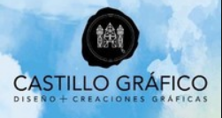

<!DOCTYPE html>
<html lang="en">
<head>
    <meta charset="UTF-8">
    <meta name="viewport" content="width=device-width, initial-scale=1.0">
    <link href="https://cdn.jsdelivr.net/npm/bootstrap@5.3.1/dist/css/bootstrap.min.css" rel="stylesheet"/>
    <link rel="stylesheet" href="css/experiencia.css"/>
    <title>Experiencia</title>
</head>
<body>
    <nav>
        <mi-navegacion></mi-navegacion>
    </nav> 


    
    <main>
      <div class="container experiencia">
        <mi-acordeon
        titulo1="ActiveIt " 
        contenido1= " <b>[Sept – 2022 – Julio 2024] ActiveIt | Cargo: Consultor</b><br>
        Participe en dos proyectos: Inicio de actividades:<br>
        Formé parte del equipo de desarrollo, utilizando tecnología Vue. Js para el front-end y Spring
        Boot para el back-end. Utilicé la metodología Scrum para la realización del proyecto.
        Herramientas adicionales GitHub, Postman y Visual Studio code.<br>
        • Logros: Cumplimiento con los objetivos de cada sprint.<br><br>
        Control de Software Claro-VTR.<br>
        Gestioné el control de versiones mediante herramientas como GitLab, GitKraken y Sourcetree
        para asegurar la integridad del código fuente.<br>
        • Logros: Implementé un sistema eficiente de control de versiones, asegurando la
        custodia y trazabilidad del código fuente a lo largo del desarrollo."
  
        titulo2="Blockey Limitada  "
        
        contenido2="<b>[Ene 2022 - May 2022] Blokey Limitada. | Cargo: Diseño de Estrategia Comercial.</b><br>
        Principales Funciones:<br>
        Desarrollé plan comercial y gestioné contactos con clientes potenciales.
        Realicé Investigación y análisis de mercado.<br>
        • Logros: Coordiné cada entrega con los plazos indicados por CORFO,, asegurando que todas las investigaciones se realizaran dentro 
          de los tiempos previstos y que la información fuera enviada puntualmente.
        "
        titulo3="Catillo Gráfico   "
        contenido3="<b>[Junio 2016 - Ene 2020] Castillo Gráfico Limitada.</b><br>
        Cargo: Gerente General, Santiago.<br>
        Principales Funciones:<br>
        Desarrollé implementé un Plan Comercial integral, con énfasis en estrategias que destacaran las ventajas competitivas y optimizaran la propuesta de valor de la empresa.  <br>
        Logros: Aumenté las ventas en un 32% y logramos incrementar la frecuencia de compra en un 90% durante 2018.<br> 
        En 2019, mantuvimos el impulso con un crecimiento adicional del 25%.  
        "
        
        
        ></mi-acordeon>
        
      </div>
      
     
  
    
    </main>


    <footer>
        <mi-footer></mi-footer>
    </footer>
        <script src="https://cdn.jsdelivr.net/npm/bootstrap@5.3.1/dist/js/bootstrap.bundle.min.js"></script>
        <script src="/js/nav.js" defer></script>
        <script src="/js/footer.js" defer></script>
        <script src="js/acordeon.js" defer></script>
        <script src="js/skill.js" defer></script>
</body>
</html>